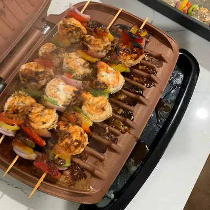

Main Page
Garlic Shrimp Kabobs

This is a quick and easy shrimp kabob recipe, perfect for
beginners. Requires minimal ingredients, but is bursting
with flavor. Serve over a bed of rice with fresh lemon
wedges.
I will be making these again! Really easy and delicious!
I only marinated for an hour as well and they were very
tasty!
Ingredients
- 1 pound frozen shrimp, thawed and peeled
- 1/4 cup olive oil
- 1 tablespoon minced garlic
- 2 teaspoons lemon juice
- 1/4 teaspoon pepper
- 1 pinch finely chopped parsley
- metal skewers
- cooking spray
How to Make the Yummy Yum Yums
- Rinse and dry shrimp.
- Whisk olive oil, garlic, lemon juice, pepper, and
parsley together in a bowl and pour into a large
resealable plastic bag. Add shrimp, coat with the
marinade, squeeze out excess air, and seal the bag.
Marinate in the refrigerator for 2 hours.
- Preheat an outdoor grill for medium heat and lightly
oil the grate. Lightly coat metal skewers with
cooking spray.
- Remove shrimp from the marinade and shake off excess.
Discard the remaining marinade. Place about 5 shrimp
on each skewer.
- Cook on the preheated grill until shrimp are bright
pink on the outside and the meat is opaque, about 5
minutes; do not overcook.